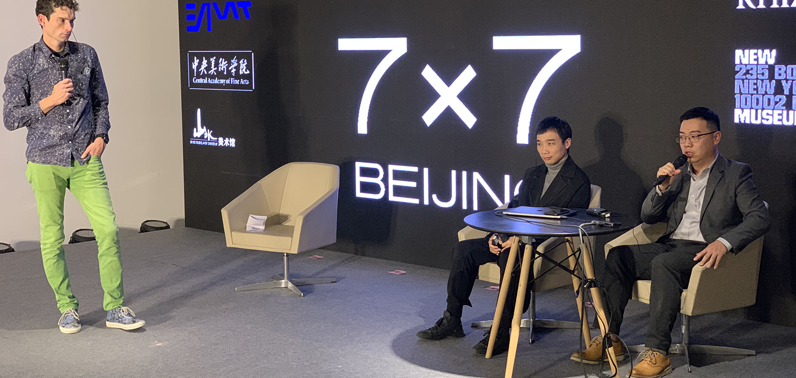
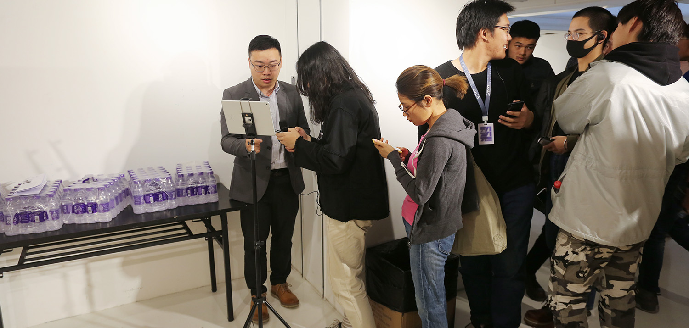
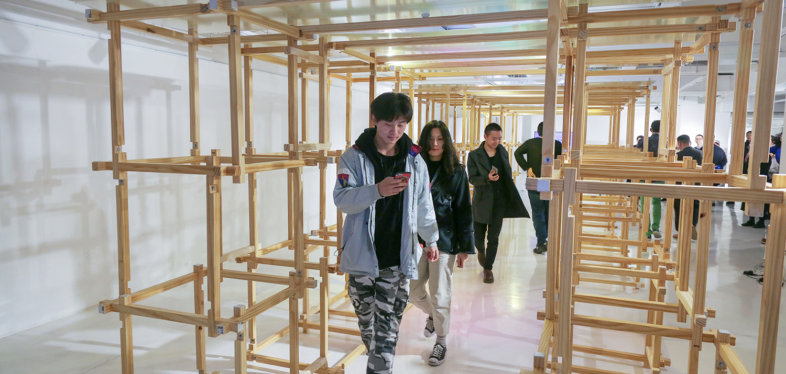
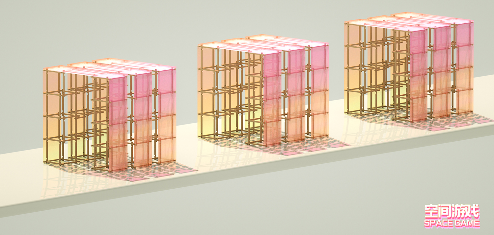
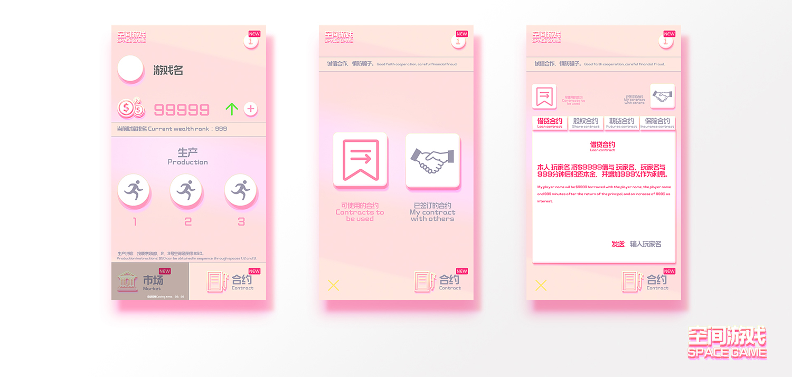

纽约新美术馆|中央美术学院 7✖7 BEIJING
    作品简介
在不久的将来，如果现实世界的大部分都像游戏一样运行，每个人在无论在任何岗位，做任何事情都能沉迷其中，获得幸福感，人人都成为玩家。如果可以创造出这样的未来，那会是一个我们更乐在其中的现实吗？会让世界变成更好玩的地方吗？我试着把这个幻想付诸行动。我想制造这样一个空间，人们用游戏的方式生产、交易、分工、产生心流，用快乐的系统让人们做艰难的工作。这个空间将会是一个游戏化的极小社会，同时也是一个社会化的游戏。
作品内容
我们运用技术制作一个虚拟的经济游戏，任何人在现场可以通过手机连接游戏成为玩家。游戏的基础生产是通过玩家不停穿越空间去完成，为了让玩家产生合作使游戏里面的经济快速增长，我们嵌入了不同的经济合作的协议（股份、期货、保险、借贷等等）。为了让游戏产生变数，我们开放了不同的投资产品。游戏的总积分为10000，每位玩家通过穿越空间可获得一定分数。在某个特定时间段系统会分配20%剩余分数给所有在线玩家。玩家与玩家之间签订不同的合作协议（股份、期货、保险、借贷等等）进行经济合作，游戏系统中会开放3种不同的金融产品让玩家使用积分购买，有可获得固定回报率的产品和风险类投资产品。当10000分配结束则游戏结束，获得最高分值的玩家获得胜利。——艺术家：叶致聪 | 冰河科技